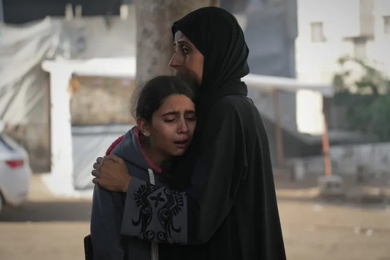

At least 67 Palestinian children killed in Gaza since ‘ceasefire’ began: UN
At least 67 Palestinian children have been killed in the Gaza Strip since a United States-brokered ceasefire agreement came into effect last month, the United Nations Children’s Fund (UNICEF) says. Speaking during a news conference in Geneva on Friday, UNICEF spokesperson Ricardo Pires said the death toll includes a baby girl who was killed in an Israeli air strike on a home in southern Gaza’s Khan Younis on Thursday.
It also includes seven other children killed a day earlier, as Israel carried out a wave of attacks across the enclave. “This is during an agreed ceasefire. The pattern is staggering,” Pires told reporters of the death toll since October 11, the first full day of the truce between Israel and Hamas. “As we have repeated many times, these are not statistics: Each was a child with a family, a dream, a life – suddenly cut short by continued violence.” Palestinian children have borne the brunt of Israel’s bombardment of Gaza, with UNICEF estimating last month that 64,000 children have been killed and injured in Israeli attacks since the war began in October 2023. Save the Children reported this week that, in 2024, an average of 475 Palestinian children “suffered lifelong disabilities” each month as a result of the war, including traumatic brain injuries and burns. Gaza has also become “home to the largest cohort of child amputees in modern history”, the humanitarian group said.